第 5 章 ① 溫度與溫度計（5-1）段考 5 題 ＋ 南一類題 6 題
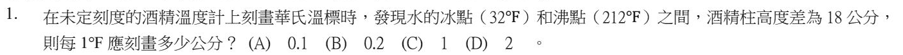
華氏溫標：水的冰點 32℉、沸點 212℉，中間相差 212 − 32 ＝ 180 格。
這 180 格對應酒精柱 18 公分 → 每 1℉ ＝ 18 ÷ 180 ＝ 0.1 公分 → (A)。
(B)(C)(D) 都不是 18 ÷ 180 的結果；注意要用「沸點減冰點」的 180 格，不是 212。
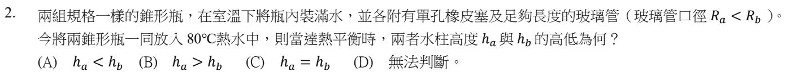
兩瓶水一樣多、一起放進 80℃ 熱水 → 兩瓶水膨脹出來的體積一樣多。
同樣多的水擠進玻璃管：管子愈細，水柱就升得愈高。Ra ＜ Rb（a 管比較細）→ ha ＞ hb → (B)。
這也是溫度計的管子要做得很細的原因：溫度變一點點，液柱就明顯移動，比較靈敏。
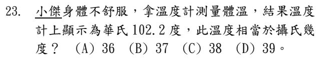
換算公式：(℉ − 32) × 5 ÷ 9 ＝ ℃。
(102.2 − 32) × 5 ÷ 9 ＝ 70.2 × 5 ÷ 9 ＝ 39℃ → (D)（發燒了）。
估算：正常體溫 37℃ ≈ 98.6℉。102.2℉ 比它高約 3.6℉，華氏 9 格＝攝氏 5 格 → 高 2℃ → 39℃。
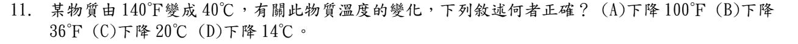
先把兩個溫度換成同一種溫標：140℉ → (140 − 32) × 5 ÷ 9 ＝ 60℃。
60℃ → 40℃：下降 20℃。換成華氏：攝氏每 1 度 ＝ 華氏 1.8 度 → 20 × 1.8 ＝ 36℉。
(A) 100℉ 是直接拿 140 − 40，兩種溫標混在一起減 ✗。(D) 14℃ 沒有根據 ✗。
⚠️ 補充：照上面的計算，(B) 下降 36℉ 和 (C) 下降 20℃ 說的是同一件事，兩個都對。本題官方答案是 (B)，這裡照官方答案計分；如果考試遇到類似題目，請問老師這一題怎麼算。
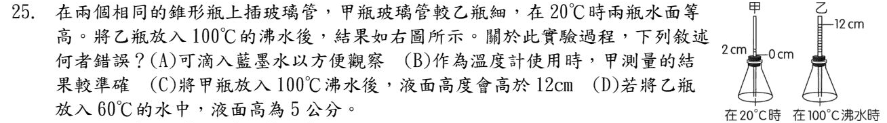
這是自製的液體溫度計：瓶裡的水受熱膨脹，玻璃管裡的水面就上升。
乙瓶：20℃ 時在 0 cm，100℃ 時到 12 cm → 每升 80℃ 上升 12 cm，每 1℃ 上升 0.15 cm。
放進 60℃：升了 40℃ → 40 × 0.15 ＝ 6 cm，不是 5 cm → (D) 錯，選 (D)。
(A) 加藍墨水只是讓水面看得清楚 ✓
(B) 甲管比較細，溫度變一點點水面就移動很多，比較靈敏、量得比較準 ✓
(C) 兩瓶水膨脹的體積一樣，甲管細 → 水柱升得比乙高，超過 12 cm ✓
✏️ 南一類題（改寫）：同一個主題再練 6 題
小安自製溫度計：在錐形瓶裝滿有色的水，插上細玻璃管。放進 20℃ 的水中，管內水面高出瓶塞 2 公分；放進 80℃ 的水中，水面高出瓶塞 14 公分。把它放進一杯不知道溫度的水中，水面高出瓶塞 8 公分，這杯水約幾℃？
- (A) 40℃
- (B) 45℃
- (C) 50℃
- (D) 60℃
先找出「每 1 公分代表幾℃」：溫度差 80 − 20 ＝ 60℃，水面差 14 − 2 ＝ 12 公分 → 每 1 公分 ＝ 60 ÷ 12 ＝ 5℃。
未知的水：水面比 20℃ 時多了 8 − 2 ＝ 6 公分 → 多 6 × 5 ＝ 30℃ → 20 ＋ 30 ＝ 50℃。
(A) 40℃ 是把 8 公分直接乘 5，忘了從 2 公分（20℃）起算。(B)(D) 算錯比例。
這種題目一定要找兩個已知點，先算「每格代表多少」，再從其中一個已知點往上加。
旅遊網站寫「今天最高氣溫 86℉」。換成攝氏溫度大約是幾℃？
- (A) 25℃
- (B) 30℃
- (C) 35℃
- (D) 54℃
換算公式：(℉ − 32) × 5 ÷ 9 ＝ ℃。
(86 − 32) × 5 ÷ 9 ＝ 54 × 5 ÷ 9 ＝ 30℃。
(D) 54 是只減了 32，忘了再乘 5/9。
記法：水結冰 0℃＝32℉、水沸騰 100℃＝212℉；攝氏 100 格對應華氏 180 格，所以攝氏 5 格＝華氏 9 格。
一杯水的溫度上升了 25℃，如果用華氏溫度來表示，相當於上升了多少℉？
- (A) 13.9℉
- (B) 45℉
- (C) 57℉
- (D) 77℉
注意：這裡問的是「溫度的變化量」，不是某一個溫度。
攝氏 100 格 ＝ 華氏 180 格 → 每 1℃ 的變化 ＝ 1.8℉ 的變化。25 × 1.8 ＝ 45℉。
(C) 57 和 (D) 77 是把 25℃ 當成「溫度」來換算（25℃＝77℉），還多加了 32——變化量不用加 32。(A) 是反過來除以 1.8。
下列哪一種溫度計的原理錯誤？
- (A) 實驗室的酒精溫度計：利用液體的熱脹冷縮
- (B) 烤箱裡的指針式溫度計：利用金屬片（固體）的熱脹冷縮
- (C) 量額溫用的額溫槍：感測人體放出的紅外線
- (D) 貼在魚缸上的液晶溫度計：利用液晶的熱脹冷縮
(A) 酒精、水銀溫度計靠液體熱脹冷縮 ✓
(B) 指針式溫度計裡面是彎成螺旋的金屬片，受熱伸長會帶動指針 → 固體熱脹冷縮 ✓
(C) 額溫槍、機場的熱像儀不用接觸身體，是感測紅外線 ✓
(D) 液晶溫度計是利用液晶在不同溫度會顯示不同顏色，不是熱脹冷縮 ✗ → 選 (D)。
關於「溫度」，下列敘述何者正確？
- (A) 溫度表示物體含有多少熱量
- (B) 溫度表示物體冷熱的程度
- (C) 溫度愈高的物體，比熱一定愈大
- (D) 溫度計可以直接測出物體吸收了多少熱量
課本定義：溫度是物體冷熱的程度，用溫度計來測量 → (B)。
(A) 熱量是「因為溫度差而傳遞的能量」，不是物體「含有」的東西 ✗
(C) 比熱是物質的特性，和溫度高低無關 ✗
(D) 溫度計只量得到溫度；要知道熱量，還要用 H ＝ M × S × ΔT 去算 ✗
攝氏溫標是以「一大氣壓下，哪兩個溫度」分別訂為 0 度和 100 度？
- (A) 人的體溫和水的沸點
- (B) 純水的凝固點（冰點）和沸點
- (C) 冰鹽混合物的溫度和水的沸點
- (D) 水在 4℃ 時和水的沸點
攝氏溫標：一大氣壓下，純水結冰（凝固點）訂為 0℃、純水沸騰（沸點）訂為 100℃，中間分成 100 等分 → (B)。
(C) 冰鹽混合物是早期華氏溫標用來訂 0℉ 的參考點，不是攝氏。(A)(D) 都不是定點。
第 5 章 ② 熱量與比熱（5-2）段考 14 題 ＋ 南一類題 8 題
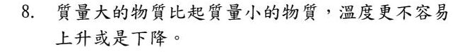
溫度容不容易改變，要看質量 × 比熱，不能只看質量。
例如 200 公克的鐵（比熱 0.113）：200 × 0.113 ≈ 23；100 公克的水：100 × 1 ＝ 100。鐵的質量是水的 2 倍，吸收相同熱量時，鐵的溫度反而變化得比較多 → 這句話「否」。
比熱的定義是「1 公克物質上升 1℃ 所需的熱量」。題目少了「1 公克」→ 非。
是非題常常只漏掉一個條件，每一個字都要對照定義。
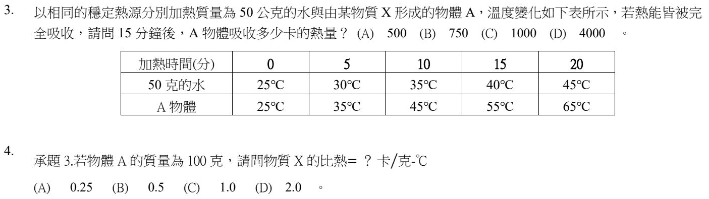
水：50 公克，15 分鐘從 25℃ 到 40℃，上升 15℃ → 吸熱 ＝ 50 × 1 × 15 ＝ 750 卡。
熱源相同、時間相同（15 分鐘）→ A 物體吸收的熱量和水一樣，也是 750 卡 → (B)。
陷阱：A 的溫度升得比較多，不代表它吸的熱比較多。相同熱源＋相同時間＝相同熱量。
A 物體 15 分鐘吸熱 750 卡，溫度從 25℃ 到 55℃，上升 30℃。
S ＝ H ÷ (M × ΔT) ＝ 750 ÷ (100 × 30) ＝ 0.25 卡／公克‧℃ → (A)。
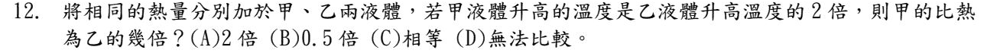
比熱 S ＝ H ÷ (M × ΔT)。熱量 H 相同、甲的 ΔT 是乙的 2 倍——但題目沒有說兩種液體的質量。
質量不知道，就算不出比熱的比 → (D) 無法比較。
(B) 0.5 倍是假設兩者質量相同才成立。
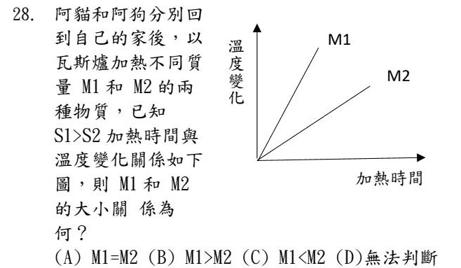
如果熱源相同：M × S × ΔT ＝ H，M1 的線比較陡（同時間升溫多）→ M1 × S1 ＜ M2 × S2，又 S1 ＞ S2 → M1 ＜ M2，會選 (C)。
但題目說阿貓和阿狗是分別在自己家裡用瓦斯爐加熱——兩家的瓦斯爐火力不一定一樣，每分鐘給的熱量不同，圖上的斜率就不能直接比較 → 官方答案 (D) 無法判斷。
這題考的是「控制變因」：要比較加熱快慢，熱源一定要相同。看到題目換了熱源，就要提高警覺。
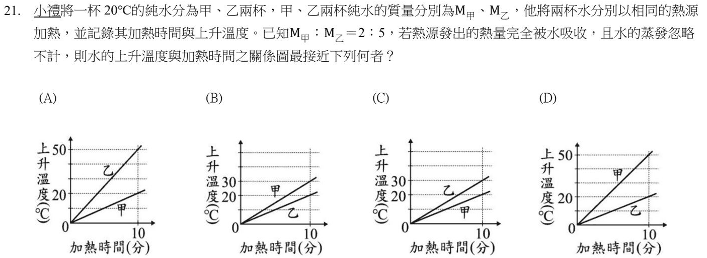
相同熱源 → 每分鐘吸收的熱量一樣。同樣是水（比熱相同），質量愈小，溫度上升愈快。
M甲：M乙 ＝ 2：5 → 上升溫度比 甲：乙 ＝ 5：2（倒過來）。
(D) 10 分鐘時甲升 50℃、乙升 20℃ → 50：20 ＝ 5：2 ✓，而且甲比較陡。
(A) 甲、乙標反了。(B)(C) 比例不對，(C) 還讓質量大的乙升得比較快。
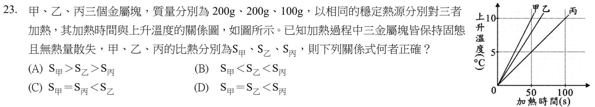
相同熱源 → 同樣的時間吸收同樣的熱量 H。由 H ＝ M × S × ΔT，M × S 愈大，升溫愈慢。
讀圖（50 秒時）：甲升 10℃、乙升 8℃、丙升 5℃。
甲：200 × S甲 × 10 ＝ H → S甲 ＝ H／2000
乙：200 × S乙 × 8 ＝ H → S乙 ＝ H／1600
丙：100 × S丙 × 5 ＝ H → S丙 ＝ H／500
分母愈大比熱愈小 → S甲 ＜ S乙 ＜ S丙 → (B)。
甲、乙質量一樣，可以直接看：升溫快的甲比熱小。丙質量只有一半卻升得最慢，比熱一定最大。
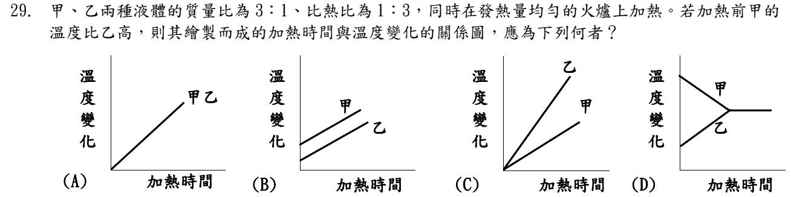
先算「質量 × 比熱」：甲 3 × 1 ＝ 3，乙 1 × 3 ＝ 3 → 一樣大。
同一個火爐、相同時間吸熱相同，M × S 一樣 → 溫度變化完全一樣。
注意縱軸是「溫度變化」，不是溫度：兩條線都從 0 出發、斜率相同 → 重疊成一條 → (A)。
(B) 是把縱軸當成「溫度」，用甲初溫比較高來畫 ✗。(C) 斜率不同 ✗。(D) 是兩杯混合時的溫度圖 ✗。
「加熱前甲的溫度比乙高」是多餘的條件，用來誘答 (B)。
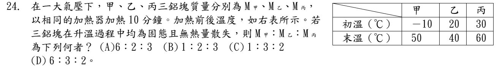
相同加熱器、都加熱 10 分鐘 → 三塊鋁吸收的熱量相同；又都是鋁，比熱也相同。
H ＝ M × S × ΔT → H、S 一樣時，質量和溫度變化成反比。
ΔT：甲 50 − (−10) ＝ 60℃，乙 40 − 20 ＝ 20℃，丙 60 − 30 ＝ 30℃。
M甲：M乙：M丙 ＝ 1/60：1/20：1/30，全部乘 60 → 1：3：2 → (C)。
陷阱：甲從 −10℃ 開始，溫度變化是 60℃ 不是 40℃。遇到負的溫度，相減時要特別小心。
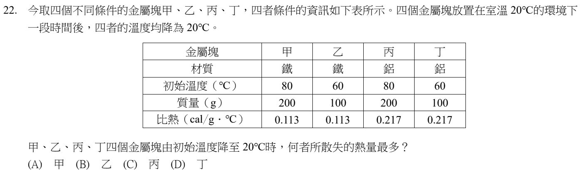
散失的熱量 H ＝ M × S × ΔT（都降到 20℃）：
甲 200 × 0.113 × 60 ＝ 1356 卡
乙 100 × 0.113 × 40 ＝ 452 卡
丙 200 × 0.217 × 60 ＝ 2604 卡
丁 100 × 0.217 × 40 ＝ 868 卡
丙最多 → (C)。質量最大、比熱最大、溫度降最多，三項都最大的就是答案。
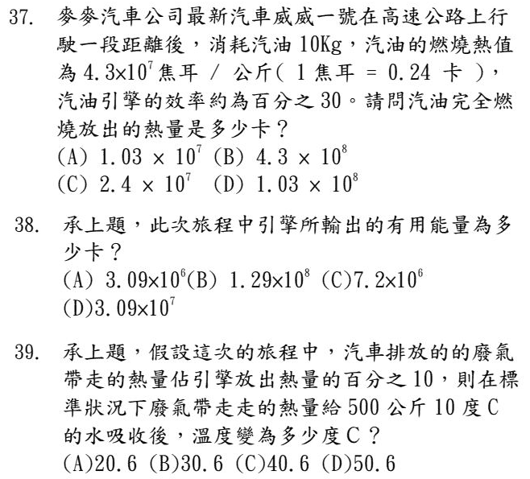
燃燒熱值 4.3 × 10⁷ 焦耳／公斤：每燒 1 公斤汽油放出 4.3 × 10⁷ 焦耳。
10 公斤 → 4.3 × 10⁸ 焦耳；換成卡：× 0.24 → 4.3 × 10⁸ × 0.24 ＝ 1.032 × 10⁸ 卡 → (D)。
(B) 是忘了把焦耳換成卡。(A) 少乘了 10 公斤。
「效率 30%」是第 38 題才用得到，這題問的是完全燃燒放出的全部熱量。
效率 30%：放出的熱量只有 30% 變成有用的能量。
1.032 × 10⁸ × 0.3 ≈ 3.09 × 10⁷ 卡 → (D)。(A) 少了一個 10 倍。
廢氣帶走 10%：1.032 × 10⁸ × 0.1 ＝ 1.032 × 10⁷ 卡。
500 公斤 ＝ 5 × 10⁵ 公克的水：ΔT ＝ H ÷ (M × S) ＝ 1.032 × 10⁷ ÷ (5 × 10⁵ × 1) ≈ 20.6℃。
原本 10℃ → 10 ＋ 20.6 ＝ 30.6℃ → (B)。(A) 20.6 是忘了加上原來的 10℃。
✏️ 南一類題（改寫）：同一個主題再練 8 題
小安說：「比熱就是讓物質溫度上升 1℃ 所需要的熱量。」這句話少了哪一個重要條件？
- (A) 要在一大氣壓下
- (B) 物質的質量要是 1 公克
- (C) 一定要用水來加熱
- (D) 要加熱剛好 1 分鐘
比熱的定義：1 公克物質上升（或下降）1℃ 所吸收（或放出）的熱量。
少了「1 公克」，一大桶水和一小杯水上升 1℃ 需要的熱量差很多，就不能拿來比較 → (B)。
114 學年度是非題第 6 題就是考這個漏字陷阱。
用穩定的熱源加熱 200 公克、15℃ 的水，3 分鐘後水溫變成 21℃（熱量完全被水吸收）。下列敘述何者正確？
- (A) 加熱 3 分鐘，水吸收了 600 卡
- (B) 加熱 6 分鐘後，水溫是 27℃
- (C) 加熱 5 分鐘，水吸收了 1500 卡
- (D) 加熱 10 分鐘後，水溫是 45℃
3 分鐘吸收的熱量：H ＝ M × S × ΔT ＝ 200 × 1 × (21 − 15) ＝ 1200 卡 → 每分鐘 400 卡、每分鐘升溫 2℃。
(A) 正確是 1200 卡，600 卡只算了一半 ✗
(B) 6 分鐘升 12℃ → 15 ＋ 12 ＝ 27℃ ✓
(C) 5 分鐘 → 400 × 5 ＝ 2000 卡 ✗
(D) 10 分鐘升 20℃ → 35℃ ✗（45℃ 是誤以為每分鐘升 3℃）
用同一個火爐分別加熱甲、乙兩杯水，兩杯都從 20℃ 加熱到 50℃。甲杯花了 3 分鐘，乙杯花了 9 分鐘。甲、乙兩杯水的質量比是多少？
- (A) 3：1
- (B) 1：3
- (C) 1：1
- (D) 2：3
同一個火爐 → 每分鐘給的熱量一樣 → 加熱時間愈長，吸收的熱量愈多。
兩杯都是水、升高的溫度也一樣（30℃），所以吸收的熱量只和質量有關：熱量比 ＝ 質量比 ＝ 時間比 ＝ 3：9 ＝ 1：3。
(A) 剛好倒過來：花時間少的那杯，水比較少。
用相同熱源加熱同質量的沙拉油和水，發現沙拉油的溫度上升得比水快。下列敘述何者正確？
- (A) 沙拉油的比熱比水大
- (B) 加熱相同時間，水吸收的熱量比沙拉油少
- (C) 要升高相同的溫度，水需要加熱的時間比沙拉油長
- (D) 加熱相同時間，兩者的溫度變化相同
相同熱源、相同時間 → 吸收的熱量相同。油升溫比較快，代表油的比熱比較小。
(A) 剛好相反：升溫快的比熱小 ✗
(B) 熱源相同、時間相同，吸收的熱量一樣多 ✗
(C) 水比熱大，要升高同樣的溫度需要更多熱量 → 加熱更久 ✓
(D) 題目已經說油升得比較快 ✗
夏天中午赤腳走在海灘上，覺得沙子很燙，海水卻涼涼的。最主要的原因是什麼？
- (A) 沙子的比熱比水小，吸收差不多的陽光熱量，溫度上升比較多
- (B) 沙子的比熱比水大，所以比較燙
- (C) 海水是液體，液體的溫度不會上升
- (D) 沙子吸收的陽光比海水少很多
H ＝ M × S × ΔT：吸收的熱量差不多時，比熱愈小，溫度變化 ΔT 愈大。
沙子比熱約 0.19 卡／公克‧℃，水是 1 → 沙子很快就變燙 → (A)。
(B) 比熱大反而不容易變燙 ✗。(C) 海水也會升溫，只是升得慢 ✗。(D) 是比熱造成的差別，不是吸收的光少 ✗。
同一個道理：沿海地區一天之中的溫差，比內陸小。
| 金屬 | 鋁 | 鐵 | 銅 | 鉛 |
|---|---|---|---|---|
| 比熱（卡／公克‧℃） | 0.217 | 0.113 | 0.093 | 0.031 |
一塊 80 公克的金屬吸收了 372 卡的熱量，溫度從 20℃ 上升到 70℃。參考下表，它最可能是哪一種金屬？
- (A) 鋁
- (B) 鐵
- (C) 銅
- (D) 鉛
比熱 S ＝ H ÷ (M × ΔT) ＝ 372 ÷ (80 × 50) ＝ 372 ÷ 4000 ＝ 0.093 卡／公克‧℃ → 銅 (C)。
比熱是物質的特性，可以拿來辨認物質（就像密度一樣）。
把各 100 公克的鋁、鐵、銅、鉛四塊金屬（比熱見上一題的表），同時放進一鍋一直在沸騰的水裡。下列敘述何者正確？
- (A) 鋁的溫度上升得最快
- (B) 鉛的溫度上升得最快
- (C) 放夠久之後，鋁的溫度最高
- (D) 放夠久之後，鉛的溫度最高
質量相同、在同樣的熱水裡，比熱最小的升溫最快 → 鉛（0.031）→ (B)。
(A) 鋁比熱最大，升溫最慢 ✗
(C)(D) 放夠久之後都和沸水達到熱平衡，四塊都是 100℃，一樣高 ✗
一瓶飲料標示「熱量 200 大卡」。如果這些熱量全部給水吸收，最多可以讓多少水的溫度升高 10℃？
- (A) 20 公克
- (B) 200 公克
- (C) 2 公斤
- (D) 20 公斤
1 大卡 ＝ 1000 卡 → 200 大卡 ＝ 200000 卡。
M ＝ H ÷ (S × ΔT) ＝ 200000 ÷ (1 × 10) ＝ 20000 公克 ＝ 20 公斤 → (D)。
(A) 是把大卡當成卡來算，差了 1000 倍。
第 5 章 ③ 熱平衡（5-2）段考 5 題 ＋ 南一類題 6 題
熱量本來就會自己從高溫傳向低溫（熱水放著會變涼），不需要人去做什麼。
說「人類無法使熱量由高溫傳向低溫」是錯的 → 否。
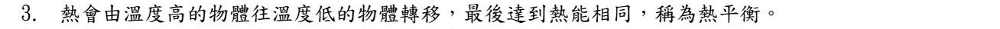
熱平衡時，兩個物體最後是溫度相同，不是「熱能相同」。
例如一大桶 30℃ 的水和一小杯 30℃ 的水已經熱平衡，但大桶水擁有的能量多得多。
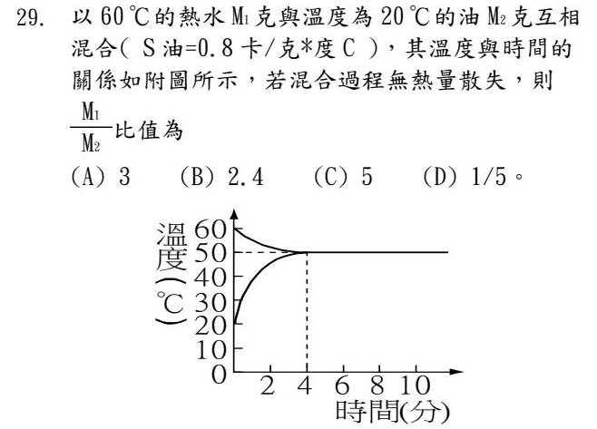
看圖：4 分鐘後兩條線都停在 50℃ → 熱平衡溫度 50℃。
熱水放出 ＝ 油吸收：
M₁ × 1 × (60 − 50) ＝ M₂ × 0.8 × (50 − 20)
10 M₁ ＝ 24 M₂ → M₁ ÷ M₂ ＝ 2.4 → (B)。
(A) 3 是忘了乘油的比熱 0.8。
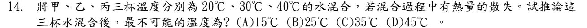
熱量只會從高溫流向低溫。三杯混合，最熱的是 40℃，沒有任何一杯能讓溫度超過 40℃；散熱只會讓溫度更低 → 45℃ 絕對不可能 → (D)。
(B)(C) 25℃、35℃ 都在 20～40℃ 之間，看各杯水量就可能出現。(A) 15℃ 比最冷的 20℃ 還低，要散失很多熱才會發生，可能性很小，但「最不可能」的是 45℃。
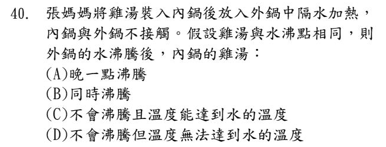
外鍋的水沸騰後維持 100℃，熱量傳給內鍋，雞湯慢慢升到 100℃（和外鍋水溫相同）。
但是沸騰除了要到沸點，還要繼續吸熱才能變成氣體。雞湯和外鍋的水溫度一樣，已經熱平衡，熱量不再流進內鍋 → 雞湯不會沸騰，但溫度能達到水的溫度 → (C)。
電鍋蒸東西、隔水加熱的布丁不會滾，就是這個道理。
✏️ 南一類題（改寫）：同一個主題再練 6 題
關於「熱平衡」，下列敘述何者正確？
- (A) 兩個物體接觸後，最後兩者含有的熱量會相等
- (B) 熱量會從熱量多的物體流向熱量少的物體
- (C) 熱量從溫度高的物體流向溫度低的物體，最後兩者溫度相同
- (D) 熱量會從質量大的物體流向質量小的物體
熱量流動的方向只看溫度：從高溫流向低溫，直到兩者溫度相同，就是熱平衡 → (C)。
(A) 最後相等的是溫度，不是「熱量」✗（114 學年度是非題第 3 題就是這個陷阱）
(B)(D) 決定方向的不是熱量多少、也不是質量大小 ✗
在保溫杯（不考慮熱量散失）中，把 150 公克、80℃ 的熱水和 50 公克、20℃ 的冷水混合。熱平衡時，水溫是多少？
- (A) 50℃
- (B) 60℃
- (C) 65℃
- (D) 70℃
熱水放出的熱量 ＝ 冷水吸收的熱量。設末溫為 T：
150 × 1 × (80 − T) ＝ 50 × 1 × (T − 20)
12000 − 150T ＝ 50T − 1000 → 200T ＝ 13000 → T ＝ 65℃。
(A) 50℃ 是直接取兩個溫度的平均，忘了熱水比較多。
快速檢查：熱水是冷水的 3 倍，末溫應該比較靠近 80℃——65 離 80 是 15、離 20 是 45，剛好 1：3。
承上題，如果改用一般的玻璃杯混合，有一部分熱量散失到較冷的空氣中，熱平衡時的水溫會如何？
- (A) 高於 65℃
- (B) 剛好 65℃
- (C) 低於 65℃
- (D) 無法判斷高低
熱水放出的熱量，有一部分跑到空氣中，冷水分到的就變少 → 末溫低於沒有散熱時的 65℃ → (C)。
和 114 學年度第 14 題同一個想法：有散熱時，末溫只會更低，不會比最熱的那杯還高。
把 300 公克、100℃、比熱 0.2 卡／公克‧℃ 的金屬塊，放進 240 公克、20℃ 的水中（不考慮熱量散失）。熱平衡時溫度是多少？
- (A) 30℃
- (B) 36℃
- (C) 40℃
- (D) 60℃
金屬放出 ＝ 水吸收。設末溫 T：
300 × 0.2 × (100 − T) ＝ 240 × 1 × (T − 20)
60 × (100 − T) ＝ 240 × (T − 20) → 6000 − 60T ＝ 240T − 4800 → 300T ＝ 10800 → T ＝ 36℃。
(D) 60℃ 是只看質量差不多就取平均，忘了金屬比熱小，放出的熱量其實不多。
把 0℃ 的冰塊放進 0℃ 的水中，裝在完全不和外界交換熱量的容器裡。過一段時間後會如何？
- (A) 冰會慢慢全部熔化成水
- (B) 冰和水的量都不會改變
- (C) 最後冰和水的量會變成一樣多
- (D) 水會慢慢全部結成冰
冰和水溫度一樣（都是 0℃），彼此之間沒有熱量流動；外界也沒有熱量進出。
冰要熔化必須吸熱、水要結冰必須放熱，都沒有熱可以交換 → 冰水的量都不變 → (B)。
在絕熱的容器中，讓一塊 80℃ 的銅塊和一杯 20℃ 的水接觸，直到熱平衡。下列敘述何者正確？
- (A) 銅塊放出的熱量，等於水吸收的熱量
- (B) 銅塊降低的溫度，一定等於水升高的溫度
- (C) 熱平衡的溫度一定是 50℃
- (D) 因為水的比熱比較大，熱量會從水流向銅塊
絕熱 → 沒有熱量跑掉 → 高溫物放出的熱量 ＝ 低溫物吸收的熱量 → (A)。
(B)(C) 溫度變化還和質量、比熱有關，不一定相等，末溫也不一定是平均值 ✗
(D) 熱量永遠從高溫流向低溫，跟比熱無關 ✗
第 5 章 ④ 熱脹冷縮與水的異常膨脹（5-3）段考 3 題 ＋ 南一類題 6 題
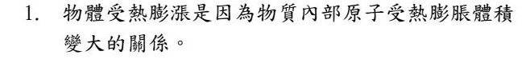
受熱膨脹時，粒子本身大小不變；是粒子運動變快、粒子之間的距離變大，整體體積才變大。
和 113 學年度是非題第 1 題一樣：膨脹是粒子間距離變大，不是粒子本身變大 → 非。
這句話兩年都考，是熱脹冷縮最常見的陷阱。
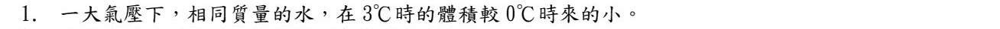
水的異常膨脹：0℃ 到 4℃ 之間，水受熱反而收縮，4℃ 時體積最小、密度最大。
3℃ 比 0℃ 更接近 4℃ → 體積比較小 → 是。
✏️ 南一類題（改寫）：同一個主題再練 6 題
高架橋每隔一段路面就有一條「伸縮縫」（兩段路面之間留一條縫，再用金屬齒條蓋住）。這樣設計主要是為了什麼？
- (A) 讓雨水可以從縫裡流走
- (B) 讓路面受熱膨脹時有空間，避免擠壓變形
- (C) 節省鋪路的材料
- (D) 讓車子經過時發出聲音提醒駕駛
夏天路面溫度很高，混凝土和鋼材會受熱膨脹；如果沒有留縫，膨脹時互相擠壓，路面會拱起、裂開 → (B)。
同一個道理：鐵軌接縫要留一小段空隙。
關於熱對物質體積的影響，下列敘述何者正確？
- (A) 夏天架設電線時要拉得鬆一點，以免冬天收縮時被拉斷
- (B) 水是最適合做溫度計的液體，因為熱脹冷縮最規律
- (C) 物體受熱膨脹，是因為每一個粒子本身變大了
- (D) 所有物質受熱時，體積一定會變大
(A) 冬天冷，電線收縮變短；夏天拉太緊，冬天就可能斷掉 ✓
(B) 水在 0～4℃ 之間「受熱反而收縮」，脹縮不規律，不適合做溫度計 ✗
(C) 粒子本身大小不變，是粒子運動變快、粒子之間的距離變大 ✗
(D) 水在 0～4℃ 就是例外 ✗
把 100 公克 0℃ 的水慢慢加熱到 10℃，水的體積會怎麼變化？
- (A) 一直變大
- (B) 一直變小
- (C) 先變小，到 4℃ 之後再變大
- (D) 先變大，到 4℃ 之後再變小
水的異常膨脹：0℃ 到 4℃ 之間，受熱反而收縮；4℃ 以上才和一般物質一樣受熱膨脹。
所以水在 4℃ 時體積最小、密度最大 → 體積先變小再變大 → (C)。
114 學年度是非題第 1 題：「3℃ 時的體積比 0℃ 小」→ 是。
寒冷的冬天，湖面結了一層冰，但湖底的魚還能活著。下列解釋何者正確？
- (A) 冰的密度比水大，沉到湖底保護魚
- (B) 4℃ 的水密度最大，會沉在湖底，而且湖面的冰層減少熱量散失
- (C) 湖底的水溫是 0℃，剛好不會結冰
- (D) 魚會游到冰層裡面躲起來
水在 4℃ 時密度最大，會沉到湖底；比較冷的水和冰比較輕，浮在上面。
湖面結冰之後，冰層像一層蓋子，減少下方的水散失熱量，湖底可以維持在約 4℃ → (B)。
(A) 冰比水輕，所以浮在湖面 ✗。(C) 湖底約 4℃，不是 0℃ ✗。(D) 不合理 ✗
從冰箱拿出來的玻璃果醬罐，金屬蓋子轉不開。用熱水沖一下金屬蓋就轉開了，原因是什麼？
- (A) 熱水讓果醬變軟
- (B) 金屬蓋受熱膨脹得比玻璃瓶口多，變得比較鬆
- (C) 玻璃瓶口受熱膨脹得比較多
- (D) 熱水讓蓋子表面變得比較滑
不同物質熱脹冷縮的程度不同。金屬受熱膨脹比玻璃明顯，金屬蓋變大一點，就和瓶口之間變鬆 → (B)。
(C) 如果玻璃瓶口脹得比較多，反而會更緊 ✗
在空錐形瓶的瓶口套一個扁扁的氣球，把錐形瓶放進熱水中，氣球慢慢鼓起來。從粒子的觀點，原因是什麼？
- (A) 瓶內的空氣粒子變大了
- (B) 瓶內的空氣粒子數目變多了
- (C) 空氣粒子運動變快，粒子之間的距離變大
- (D) 熱水中的水蒸氣跑進瓶子裡
氣體受熱，粒子運動變快、彼此距離變大，整體體積變大，就把氣球撐起來 → (C)。
(A) 粒子本身大小不變 ✗（113、114 學年度是非題都考過）
(B) 瓶口被氣球封住，粒子數目不變 ✗
(D) 瓶子是封住的，熱水進不去 ✗
第 5 章 ⑤ 三態變化與潛熱（5-3）段考 9 題 ＋ 南一類題 7 題
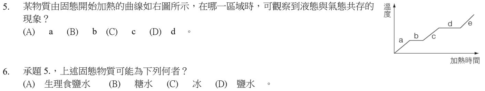
讀加熱曲線：上升的線段是在升溫；水平的線段是在改變狀態，溫度不變。
a 固態升溫 → b 熔化（固液共存）→ c 液態升溫 → d 沸騰（液氣共存） → e 氣態升溫 → (D)。
圖中熔化（b）時溫度不變 → 有固定的熔點 → 是純物質。
冰是純物質 → (C)。(A) 生理食鹽水、(B) 糖水、(D) 鹽水都是混合物（水溶液），而且本來就是液體，不是「固態物質」。
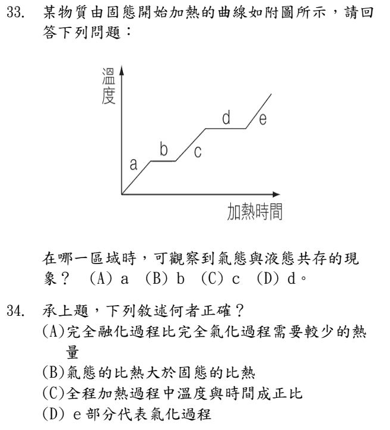
和 112 學年度第 5 題同一張圖：水平段 b 是熔化（固液共存），水平段 d 是沸騰（氣液共存） → (D)。
(A) 水平段的長度代表改變狀態要吸收的熱量。b（熔化）比 d（汽化）短 → 完全熔化需要的熱量比較少 ✓
(B) 從圖看，氣態 e 段升溫並沒有比固態 a 段慢，推不出「氣態比熱比較大」✗
(C) 有兩段溫度不變，溫度不是一直和時間成正比 ✗
(D) e 段是氣態在升溫；汽化（沸騰）是 d 段 ✗
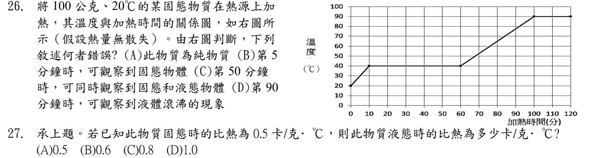
讀圖：0～10 分鐘固態升溫（20→40℃）；10～60 分鐘停在 40℃，熔化；60～100 分鐘液態升溫（40→90℃）；100 分鐘之後停在 90℃，沸騰。
(A) 有固定的熔點、沸點 → 純物質 ✓
(B) 第 5 分鐘還在固態升溫 ✓
(C) 第 50 分鐘在熔化，固液共存 ✓
(D) 第 90 分鐘還在液態升溫（約 82℃），要到第 100 分鐘才開始沸騰 ✗ → 選 (D)。
先算熱源每分鐘給多少熱量（用固態那段）：100 × 0.5 × (40 − 20) ＝ 1000 卡，花 10 分鐘 → 每分鐘 100 卡。
液態那段：60～100 分鐘共 40 分鐘 → 吸熱 4000 卡，溫度 40→90℃ 上升 50℃。
S ＝ 4000 ÷ (100 × 50) ＝ 0.8 卡／公克‧℃ → (C)。
這類題目的關鍵：先用已知比熱的那一段，算出熱源每分鐘給多少熱。
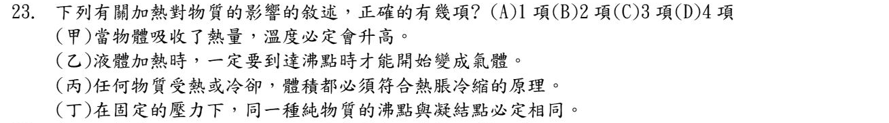
(甲) 錯：熔化、沸騰時一直吸熱，溫度卻不變。
(乙) 錯：液體在任何溫度都會蒸發，不用到沸點。
(丙) 錯：水在 0～4℃ 受熱反而收縮，不符合熱脹冷縮。
(丁) 對：同一種純物質、相同壓力下，沸點 ＝ 凝結點（就像熔點 ＝ 凝固點）。
只有丁 → 1 項 → (A)。
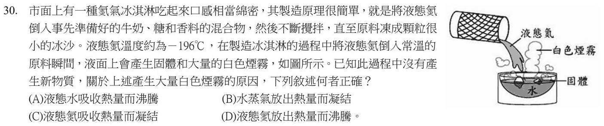
白色煙霧不是氣體——水蒸氣、氮氣都是看不見的。看得見的白霧是很多小水滴。
液態氮非常冷（−196℃），讓周圍空氣中的水蒸氣放出熱量、凝結成小水滴 → (B)。
(A) 原料是常溫，水不會沸騰 ✗
(C) 液態氮吸熱是汽化成氮氣，不是凝結 ✗
(D) 沸騰是吸熱，不是放熱 ✗
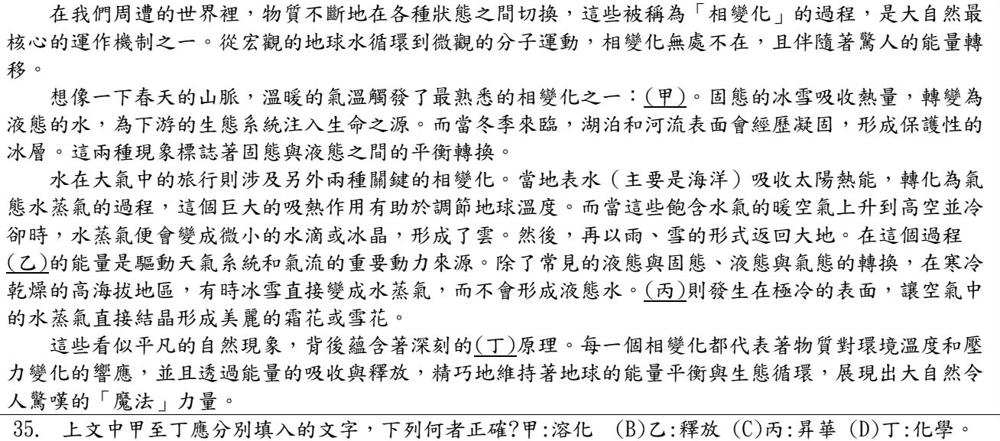
逐格判斷：
甲：冰雪吸熱變成水 → 熔化。選項寫「溶化」（溶解的溶）是錯字 ✗
乙：水蒸氣凝結成小水滴，會放出（釋放）熱量 ✓
丙：水蒸氣直接結晶成霜 → 氣態直接變固態，叫凝華，不是昇華 ✗
丁：三態變化沒有產生新物質 → 物理變化，不是化學 ✗
→ (B) 乙：釋放。
原卷第一個選項漏印了「(A)」代號，題目裡的「甲:溶化」就是 (A)。
✏️ 南一類題（改寫）：同一個主題再練 7 題
| 加熱時間（分） | 0 | 5 | 10 | 15 | 20 | 25 | 30 |
|---|---|---|---|---|---|---|---|
| 溫度（℃） | 0 | 20 | 40 | 40 | 40 | 50 | 60 |
用穩定的熱源加熱 100 公克、0℃ 的某固體，每 5 分鐘記錄一次溫度如下表。下列敘述何者正確？
- (A) 此物質的熔點是 60℃
- (B) 加熱到第 10 分鐘時，已經全部變成液體
- (C) 此物質的凝固點是 20℃
- (D) 此物質固態時的比熱，比液態時小
看表：0～10 分鐘溫度上升（固態）；10～20 分鐘停在 40℃（正在熔化，固液共存）；20 分鐘之後再上升（液態）。
(A) 熔點是溫度停住不動的 40℃ ✗
(B) 第 10 分鐘才剛開始熔化，到第 20 分鐘才全部變成液體 ✗
(C) 純物質的凝固點 ＝ 熔點 ＝ 40℃ ✗
(D) 熱源相同，每 5 分鐘吸熱一樣：固態每 5 分鐘升 20℃，液態每 5 分鐘只升 10℃ → 固態升溫快，比熱比較小 ✓
| 物質 | 甲 | 乙 | 丙 | 丁 |
|---|---|---|---|---|
| 熔點（℃） | −80 | −40 | −60 | 60 |
| 沸點（℃） | 150 | 200 | 300 | 400 |
某物質在 −50℃ 時是固體、50℃ 時是液體、250℃ 時是氣體。根據下表，它可能是哪一種？
- (A) 甲
- (B) 乙
- (C) 丙
- (D) 丁
三個條件一起看：
① −50℃ 是固體 → 熔點要高於 −50℃：甲（−80）、丙（−60）在 −50℃ 時已經熔化了 ✗
② 50℃ 是液體 → 熔點要低於 50℃：丁（60）在 50℃ 還是固體 ✗
③ 250℃ 是氣體 → 沸點要低於 250℃：乙（200）✓
→ 只剩 乙。
關於「蒸發」和「沸騰」，下列敘述何者正確？
- (A) 沸騰只發生在液體表面
- (B) 蒸發是氣體變成液體的過程
- (C) 沸騰時液體會放出熱量
- (D) 蒸發在任何溫度下都可以進行
(A) 沸騰時液體內部也產生大量氣泡；只在表面發生的是蒸發 ✗
(B) 蒸發是液體變成氣體；氣體變成液體叫凝結 ✗
(C) 液體變成氣體（汽化）要吸收熱量 ✗
(D) 蒸發在任何溫度都會發生，例如晾衣服 ✓
114 學年度第 23 題（乙）：「液體一定要到沸點才開始變成氣體」→ 錯，因為有蒸發。
衣櫃裡的除蟲樟腦丸，放了幾個月後愈來愈小，最後不見了。這是什麼現象？
- (A) 樟腦丸吸收熱量，直接由固態變成氣態（昇華）
- (B) 樟腦丸放出熱量，直接由固態變成氣態
- (C) 樟腦丸先熔化成液體，再被衣服吸走
- (D) 樟腦丸被蟲吃掉了
固態不經過液態、直接變成氣態，叫做昇華；昇華要吸熱 → (A)。所以衣櫃裡聞得到樟腦味。
(B) 昇華是吸熱，不是放熱 ✗。(C) 沒有看到液體 ✗。(D) 樟腦丸是用來驅蟲的 ✗
反過來，氣態直接變成固態（例如霜）叫凝華，會放熱。114 學年度第 35 題的（丙）就是凝華。
洗完熱水澡，浴室的鏡子上蒙了一層霧。這層霧是怎麼來的？
- (A) 熱水直接噴到鏡子上
- (B) 空氣中的水蒸氣碰到較冷的鏡面，凝結成小水滴
- (C) 鏡子裡的水滲出來
- (D) 鏡子受熱膨脹產生的裂痕
洗澡時浴室裡有很多水蒸氣（看不見）。碰到溫度比較低的鏡面，放出熱量、凝結成很多小水滴，看起來就是霧 → (B)。
112 學年度第 30 題液態氮冰淇淋的「白色煙霧」也是同一件事：空氣中的水蒸氣遇冷凝結。
一杯加了冰塊的飲料放在桌上，杯子外壁出現很多小水珠。這些水珠是哪裡來的？
- (A) 杯子裡的冰塊熔化後滲出來
- (B) 空氣中的水蒸氣碰到冰冷的杯壁凝結而成
- (C) 杯子裡的飲料蒸發後，在杯外凝結
- (D) 桌面上的水往上爬到杯壁
杯壁被冰飲料弄得很冷，周圍空氣中的水蒸氣碰到冷杯壁就凝結成水珠 → (B)。
(A) 玻璃杯不會讓水滲出來 ✗
(C) 冰飲料溫度很低，蒸發很慢，而且杯外的水珠不是從杯內跑出來的 ✗
(D) 不合理 ✗
剛煮好的熱湯蓋上碗蓋，過一會兒打開，碗蓋內側沾滿了水滴。關於這些水滴，下列敘述何者正確？
- (A) 是外面空氣中的水蒸氣穿過碗蓋凝結的
- (B) 是湯蒸發出來的水蒸氣，碰到比較冷的碗蓋凝結而成，凝結時會放熱
- (C) 水蒸氣凝結成水滴時需要吸收熱量
- (D) 是碗蓋本身的水分被加熱後跑出來的
熱湯不斷蒸發出水蒸氣，碰到溫度比較低的碗蓋，就凝結成水滴；凝結是放熱的過程 → (B)。
(A) 碗蓋是封住的，外面的水蒸氣進不來；而且這次水滴在內側，和上一題冰杯的外側剛好相反 ✗
(C) 凝結是放熱，不是吸熱 ✗
(D) 碗蓋本身沒有水分 ✗
第 5 章 ⑥ 熱的傳播：傳導、對流、輻射（5-4）段考 7 題 ＋ 南一類題 7 題
熱輻射主要是紅外線，和可見光一樣都是電磁波，不需要介質，可以在真空中傳播 → 是。
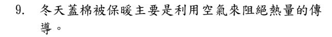
棉被的纖維之間藏了很多不流動的空氣，空氣是熱的不良導體，可以減少身體的熱傳導出去 → 是。
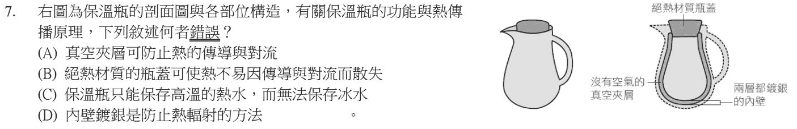
保溫瓶的設計是讓熱量不容易進出——熱的東西熱量出不去，冰的東西外面的熱也進不來。所以保溫瓶也能保冷 → (C) 錯，選 (C)。
(A) 真空沒有粒子，擋住傳導和對流 ✓
(B) 絕熱瓶蓋減少熱從瓶口傳導、對流出去 ✓
(D) 鍍銀像鏡子，把輻射熱反射回去 ✓
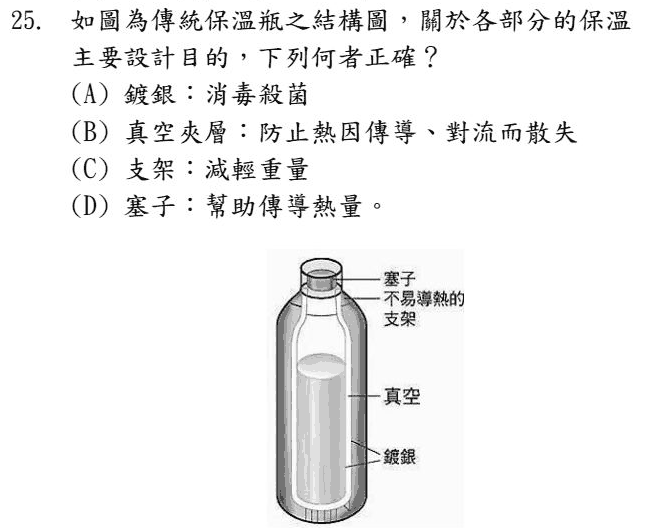
保溫瓶每一部分都在擋某一種熱的傳播：
(A) 鍍銀：反射輻射熱，不是消毒 ✗
(B) 真空夾層：沒有粒子 → 防止傳導、對流 ✓
(C) 支架用不易導熱的材料：減少傳導，不是減輕重量 ✗
(D) 塞子：阻擋熱的傳導和對流，不是幫助傳導 ✗
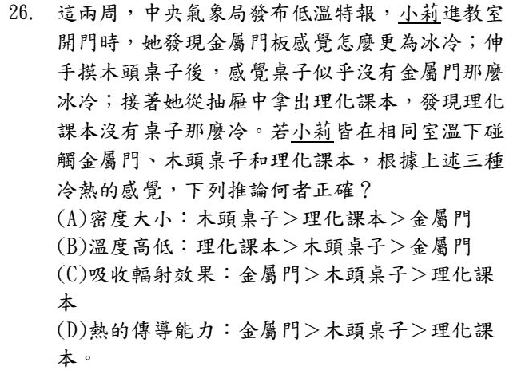
金屬門、木頭桌子、課本都在同一個室溫下放很久 → 溫度其實一樣，(B) ✗。
摸起來冷不冷，是看手上的熱被帶走得多快：金屬導熱最快 → 最冰；木頭次之；紙最慢 → 熱的傳導能力：金屬門 ＞ 木頭桌子 ＞ 課本 → (D)。
(A) 密度和冷熱感無關 ✗。(C) 摸東西主要是傳導，不是輻射 ✗。
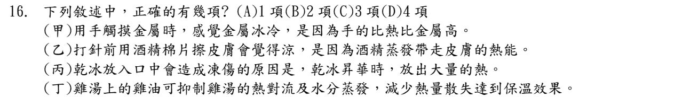
(甲) 錯：摸金屬覺得冰，是因為金屬傳導熱很快，把手的熱帶走，不是比熱的關係。
(乙) 對：酒精蒸發要吸熱，從皮膚帶走熱量，所以覺得涼。
(丙) 錯：乾冰昇華要吸熱，大量吸走口腔的熱才造成凍傷，不是放熱。
(丁) 對：油浮在湯面上像蓋子，擋住對流和蒸發，湯不容易涼。
乙、丁 → 2 項 → (B)。
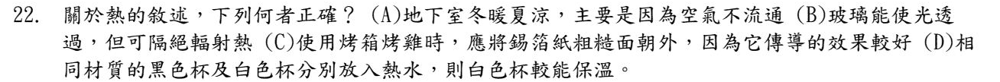
(A) 地下室冬暖夏涼，是因為四周的土壤、岩層不容易傳熱，把外面的冷熱擋住，不是空氣不流通 ✗
(B) 陽光照進車子裡會讓車內變熱 → 輻射熱可以穿過玻璃，玻璃不能隔絕輻射熱 ✗
(C) 錫箔紙亮面、粗糙面的差別在反射或吸收輻射熱，不是傳導 ✗
(D) 白色表面放出（和吸收）輻射熱都比較少，白色杯子散熱慢、比較能保溫 ✓
規則：深色、粗糙的表面吸收和放出輻射熱都比較多；淺色、光亮的表面都比較少。
✏️ 南一類題（改寫）：同一個主題再練 7 題
屋頂上的太陽能熱水器，集熱板通常漆成深黑色。主要原因是什麼？
- (A) 深色比較容易把熱傳導給水
- (B) 深色可以增加空氣的對流
- (C) 深色可以吸收比較多的輻射熱
- (D) 深色可以避免熱水器被太陽曬壞
陽光的熱是用輻射傳過來的。深色、粗糙的表面吸收輻射熱比較多；淺色、光亮的表面會把它反射掉 → (C)。
反過來，深色也比較容易放出輻射熱，所以 114 學年度第 22 題說：白色杯子比黑色杯子保溫。
關於熱的三種傳播方式，下列敘述何者正確？
- (A) 傳導是所有物質最主要的傳熱方式
- (B) 物質受熱膨脹、密度變小而上升，把熱帶走的方式叫做傳導
- (C) 輻射一定要靠空氣才能把熱傳出去
- (D) 對流是液體和氣體最主要的傳熱方式
(A) 傳導是固體主要的傳熱方式 ✗
(B) 受熱的流體上升、冷的下降，這樣循環傳熱叫對流 ✗
(C) 輻射不需要介質，太陽的熱就是穿過真空的太空傳到地球 ✗
(D) 液體、氣體（流體）主要靠對流 ✓
冬天早上，公園的鐵欄杆和木頭長椅都放在戶外一整夜，溫度相同。用手去摸，卻覺得鐵欄杆冷得多。原因是什麼？
- (A) 鐵欄杆的溫度其實比較低
- (B) 鐵傳導熱的速度比木頭快，很快把手上的熱帶走
- (C) 木頭會自己產生熱量
- (D) 鐵的比熱比木頭大
兩者溫度相同。我們覺得「冷」，其實是手上的熱被帶走得快。
鐵是熱的良導體，傳導得快，手的熱一下子就被吸走 → 覺得特別冰 → (B)。
(A) 放在一起一整夜，已經和空氣達到熱平衡，溫度一樣 ✗。(C) 木頭不會發熱 ✗。(D) 和比熱無關，而且鐵的比熱其實比較小 ✗
和 113 學年度第 26 題金屬門、木頭桌子的題目是同一個觀念。
晴朗的白天，在海邊常常會吹「海風」（風從海面吹向陸地）。下列解釋何者正確？
- (A) 海水比熱小，白天升溫比陸地快
- (B) 陸地比熱小、升溫快，陸地上方的空氣受熱膨脹、密度變小而上升，海面的空氣流過來補充
- (C) 陸地上方的空氣下沉，把海面的空氣推過去
- (D) 海風是因為海水蒸發吸熱造成的
白天：陸地比熱小，升溫比海快 → 陸地上方空氣變熱、密度變小而上升 → 海面較冷的空氣流過來補位 → 風從海吹向陸 → (B)。這是一種大規模的對流。
(A) 海水比熱大，升溫慢 ✗。(C) 陸地上方是上升，不是下沉 ✗。(D) 不是主要原因 ✗
晚上剛好相反：陸地降溫快，風從陸地吹向海（陸風）。
去市場買了一盒生鮮魚肉，另外要了一袋冰塊保鮮。在保冷袋裡應該怎麼放，冷藏效果最好？
- (A) 冰塊放下面，魚肉放上面
- (B) 冰塊放上面，魚肉放下面
- (C) 冰塊放在魚肉旁邊
- (D) 怎麼放效果都一樣
冰塊旁邊的空氣被冷卻後，密度變大、往下沉（對流）。冰塊放上面，冷空氣會一路往下包住魚肉 → (B)。
(A) 冰塊在下面，冷空氣只會停在底部，上面的魚肉冷得慢 ✗
同一個道理：冷氣機裝在牆的高處、電暖器放在地上，讓房間形成對流。
露營時，小安把冰涼的飲料放在保麗龍箱裡，外面再包一條毛毯。關於這個做法，下列敘述何者合理？
- (A) 毛毯會讓冰塊熔化得更快，只適合用來保溫熱的東西
- (B) 保麗龍和毛毯裡有很多空氣，空氣是熱的不良導體，可以減少熱量傳導進來
- (C) 毛毯主要是用來防止熱的對流
- (D) 保麗龍箱主要是用來反射輻射熱
保麗龍、毛毯裡面都藏著很多不流動的空氣，空氣是熱的不良導體，可以擋住熱的傳導 → (B)。
(A) 隔熱是雙向的：熱的東西熱量不容易跑出去，冰的東西外面的熱也不容易跑進來 ✗（112 學年度第 7 題保溫瓶也考這點）
(C)(D) 主要擋的是傳導 ✗
傳統保溫瓶的結構中，「玻璃內膽的兩層之間抽成真空」主要是為了減少哪些熱的傳播方式？
- (A) 只有輻射
- (B) 傳導和對流
- (C) 只有對流
- (D) 傳導、對流和輻射都能完全阻擋
傳導和對流都需要物質（粒子）才能傳熱。抽成真空，中間沒有粒子 → 傳導、對流都被擋住 → (B)。
輻射不需要介質，真空擋不住輻射；擋輻射要靠內壁鍍銀（像鏡子一樣把輻射熱反射回去）。
(A)(C) 少算了 ✗。(D) 真空擋不住輻射 ✗
第 5 章 ⑦ 延伸閱讀題組：熱、功與熱平衡定律段考 13 題 ＋ 南一類題 4 題
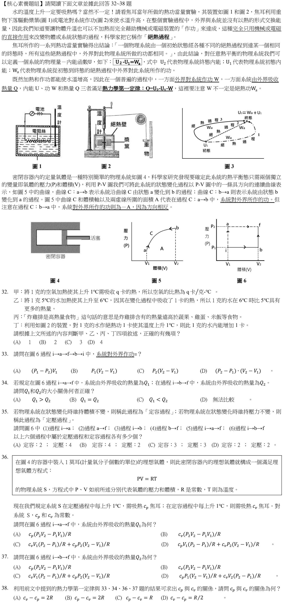
這一組（32～38 題）是高中物理先修的閱讀題，段考每題只有 1 分。看不懂可以先跳過，先把本章前面的觀念弄熟。
(甲) 錯：文章後段說，氣體在不同過程中（定壓、定容）上升 1℃ 需要的熱不一樣（cp、cv），不能只用一個 q 當作空氣的比熱。
(乙) 錯：熱量是「傳遞中」的能量，不能說水「具有」比較多熱量（應該說內能增加）。
(丙) 錯：同樣是把熱量說成物體「含有」的東西。
(丁) 對：絕熱過程中，外界作功多少，內能就增加多少（U₂ − U₁ ＝ Wa ＝ 1 卡）。
只有丁 → 1 項 → (A)。
文章：系統體積變大時對外界作功，大小是 P-V 圖曲線下方的面積。
i→a、f→b 體積不變，不作功。a→f 在 P₂ 下膨脹：作功 P₂(V₂ − V₁)。b→i 在 P₁ 下被壓縮：作功 −P₁(V₂ − V₁)。
合計 (P₂ − P₁)(V₂ − V₁)，就是圖 6 那個長方形的面積 → (D)。
熱力學第一定律 Q ＝ U₂ − U₁ − W（W 是外界對系統作的功 ＝ −系統對外作的功）。
兩條路徑起點、終點相同 → U₂ − U₁ 一樣。差別在系統對外作的功：i→a→f 是 P₂(V₂ − V₁)，i→b→f 是 P₁(V₂ − V₁)，前者比較大。
對外作功愈多，要吸收的熱量就愈多 → Q₁ ＞ Q₂ → (A)。
定容（體積不變，垂直線）：(1) i→a、(4) b→f → 2 個。
定壓（壓力不變，水平線）：(2) a→f、(3) i→b → 2 個。
(5)(6) 是兩段接起來，壓力和體積都變了，兩種都不是 → (D)。
由 PV ＝ RT，溫度 T ＝ PV ÷ R。
i→a 定容（V₁）：溫度上升 V₁(P₂ − P₁)／R，吸熱 cv V₁(P₂ − P₁)／R。
a→f 定壓（P₂）：溫度上升 P₂(V₂ − V₁)／R，吸熱 cp P₂(V₂ − V₁)／R。
兩段加起來 → (C)。
i→b 定壓（P₁）：吸熱 cp P₁(V₂ − V₁)／R。
b→f 定容（V₂）：吸熱 cv V₂(P₂ − P₁)／R。
兩段加起來 → (D)。
由第 34 題：兩條路徑 ΔU 相同，所以 Q₁ − Q₂ ＝ 兩條路徑對外作功的差 ＝ (P₂ − P₁)(V₂ − V₁)。
把 36、37 題的答案相減：Q₁ − Q₂ ＝ (cp − cv)(P₂ − P₁)(V₂ − V₁)／R。
兩式相等 → (cp − cv)／R ＝ 1 → cp − cv ＝ R → (C)。
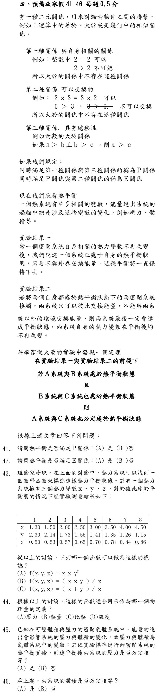
這一組（41～46 題）是段考最後的「預備放寒假」閱讀題，每題 0.5 分，屬於高中先修的延伸內容。
P 關係 ＝ 第一種（和自己有關係）＋ 第三種（遞移性）。
熱平衡：一個系統和自己當然處於熱平衡（第一種）；文章的定理「A 和 B 平衡、B 和 C 平衡 → A 和 C 平衡」就是遞移性（第三種）→ 是。
E 關係 ＝ P 關係 ＋ 第二種（可以交換）。
「A 和 B 熱平衡」與「B 和 A 熱平衡」說的是同一件事，可以交換 → 熱平衡也滿足 E 關係 → 是。
要找一個函數，讓表中 8 組（彼此平衡的狀態）算出來的值都一樣。
試 (B) x × y ÷ z：1.30 × 2.30 ÷ 0.50 ≈ 5.98；2.00 × 1.73 ÷ 0.57 ≈ 6.07；4.50 × 1.15 ÷ 0.86 ≈ 6.02 → 都約等於 6 ✓
(A) x × y²：第 1 組 ≈ 6.88、第 8 組 ≈ 5.95，不一樣 ✗。(C) (x ＋ y) ÷ z：第 1 組 7.2、第 8 組 ≈ 6.57 ✗。
這一題只有 (A)(B)(C) 三個選項。
處於熱平衡的系統，有一個共同的值——這就是溫度 → (D)。
溫度計能用，就是因為「和溫度計平衡的東西，彼此也平衡」。
熱平衡只保證溫度相同。壓力是另一個變數，不一定相等（例如同在室溫下的打飽氣的輪胎和沒打氣的氣球）→ 否。
同理，體積也不必相等，大小不同的兩個系統也能熱平衡 → 否。
✏️ 南一類題（改寫）：同一個主題再練 4 題
下列哪一個方法讓物體溫度升高，不是靠「從高溫的地方吸收熱量」，而是靠「作功」？
- (A) 冬天用雙手用力互相搓，手變暖
- (B) 用熱水袋暖手
- (C) 坐在火爐旁邊烤火
- (D) 曬太陽
(B)(C)(D) 都是熱量從溫度較高的東西（熱水、火、太陽）傳過來。
(A) 搓手時兩隻手溫度一樣，沒有「熱從高溫流到低溫」；是手摩擦作功讓溫度上升 → (A)。
這就是 112 學年度題組文章裡焦耳實驗的重點：讓物體升溫，可以靠加熱，也可以靠作功。
下列哪一句話的用詞，最符合科學上「熱量」的意思？
- (A) 這杯 80℃ 的熱水「含有」很多熱量
- (B) 冰塊放進果汁後，熱量從果汁傳到冰塊
- (C) 這塊石頭溫度很低，所以完全沒有熱量
- (D) 溫度愈高的物體，熱量一定愈多
科學上的熱量，是因為溫度差而「傳遞」的能量，要說「從哪裡傳到哪裡」→ (B)。
(A)(C)(D) 把熱量說成物體「含有、擁有」的東西 ✗。物體擁有的能量叫做「內能」；熱量是內能在兩個物體之間轉移的那一部分。
112 學年度第 32 題的（乙）（丙）就是用「含有熱量」的說法來設陷阱。
用同一支溫度計分別量甲杯水和乙杯水，讀數都是 30℃。把兩杯水接觸在一起，會發生什麼事？
- (A) 熱量會從甲杯流向乙杯
- (B) 熱量會從水比較多的那杯流出去
- (C) 兩杯水之間不會有熱量的淨流動
- (D) 要看兩杯水的質量才能判斷
溫度計分別和甲、乙達到熱平衡，讀數一樣 → 甲、乙溫度相同 → 甲和乙之間也是熱平衡，沒有熱量淨流動 → (C)。
(A)(B)(D) 熱量流動只看溫度高低，溫度一樣就不流 ✗
「甲和丙平衡、乙和丙平衡 → 甲和乙也平衡」——這正是 113 學年度 41～46 題閱讀文章講的定理，也是溫度計可以用的原因。
用打氣筒快速替腳踏車輪胎打氣，打了幾十下之後，打氣筒的底部摸起來熱熱的。最合理的解釋是什麼？
- (A) 外界（人）對筒內空氣作功，使空氣的溫度升高
- (B) 輪胎裡的熱量跑回打氣筒
- (C) 空氣被壓縮後比熱變大
- (D) 手的熱量傳到打氣筒底部
人推打氣筒，對筒內的空氣作功、把它壓縮，空氣的內能增加、溫度升高，熱再傳到筒壁 → (A)。
(B) 輪胎沒有比較熱 ✗。(C) 和比熱無關 ✗。(D) 手握的是把手，熱的卻是遠離手的底部 ✗
這就是「作功也能改變溫度」的生活例子；高中會用熱力學第一定律來算。